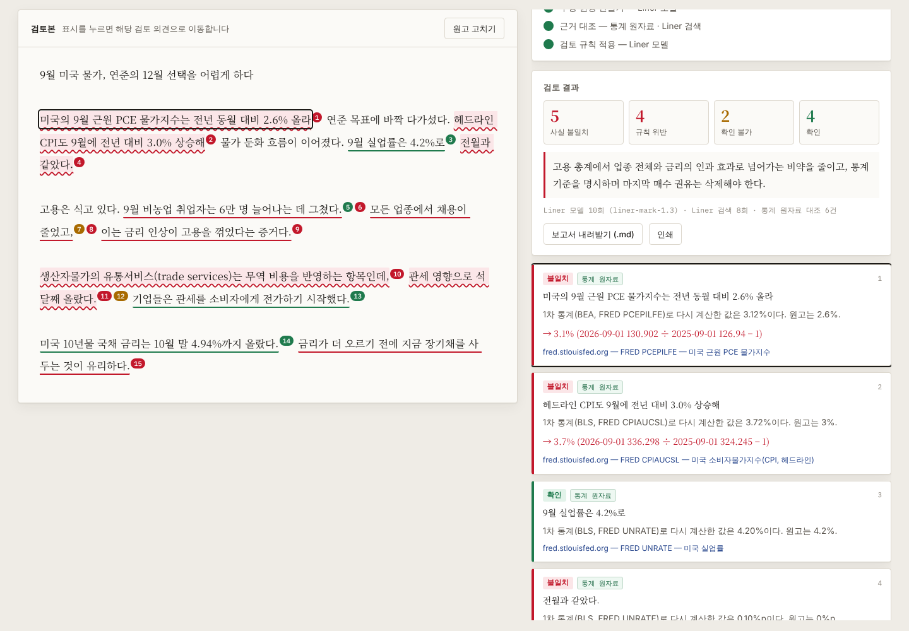

25년 동안 컨설팅 회사와 증권사에서 남의 보고서에 빨간 줄을 그었다. 1인 리서치 회사를 차리자, 내 원고에 빨간 줄을 그어 줄 사람이 없어졌다. Redline은 그 선임의 검토를 에이전트로 옮긴 것이다.
누가. 검토해 줄 선임 없이 글과 보고서를 내보내는 사람. 1인 리서치 회사, 소규모 자문사, 혼자 제안서를 쓰는 컨설턴트.
어떤 문제. 컨설팅 회사와 증권사에는 보고서가 나가기 전 선임이 숫자를 다시 맞추고 단정을 지우는 단계가 있다. 그 단계가 실수를 막는다. 혼자 일하면 쓴 사람이 곧 검토자여서, 자기가 쓴 숫자를 자기 눈으로는 못 잡는다.
직접 겪은 실수. 생산자물가의 trade services를 "무역 서비스"로 옮겨 썼다(실제 뜻은 도소매 유통마진). 단가가 내렸다는 사실로 총지출이 줄었다고 썼다. 전월 대비와 전년 대비를 한 문단에 섞었다. 이런 실수를 하나씩 적어 온 목록이 12개 규칙이 됐다.
얼마나.

원고 위에 표시가 붙고, 오른쪽 카드에 근거·계산식·수정 제안·출처가 나온다. 붉은 물결 = 사실 불일치, 붉은 실선 = 규칙 위반, 녹색 = 확인.
Liner API 활용. 필요한 키는 Liner 키 하나다.
| 기능 | Liner API |
|---|---|
| 확인할 문장 추출·구조화 | Model (liner-mark) |
| 출처 찾기 (웹·학술, 재검색) | Search |
| 검색 결과만으로 판정, 수정문 작성 | Model |
| 규칙 적용, 총평 | Model |
역할을 나눴다. Liner 모델은 무엇을 어느 자료로 확인할지 정하고 판정을 글로 쓴다. Liner 검색은 근거를 가져온다. 숫자 계산은 코드가 한다. 검토 한 번에 모델 4~12회, 검색 2~10회, 비용은 몇 센트다.
통계 원자료로 참인 문장을 만들고 그 사이에 오류를 심은 원고 16편을 돌렸다. 정답표와 채점 스크립트는 저장소에 있고 누구나 다시 돌릴 수 있다(약 4분).
| 심은 것 | Redline | 같은 모델에 원고만 준 경우 |
|---|---|---|
| 수치 오기·기준 혼동(전월 대비 값을 전년 대비로) | 24 / 24 | 0 / 24 |
| 제도·정의 오류 (Liner 검색으로 대조) | 8 / 8 | 8 / 8 |
| 규칙 위반 문장 | 24 / 24 | 24 / 24 |
| 참인 문장을 틀렸다고 짚음 (오경보) | 0 / 32 | 0 / 32 |
| 참인 문장에 군더더기 지적 | 0 / 24 | 7 / 24 |
한계를 숨기지 않는다. 오류를 심은 사람과 도구를 만든 사람이 같다. 심은 수치는 통계 목록(미국 16종·한국 6종) 안의 지표이고, 규칙 위반 문장은 눈에 띄게 썼다. 남이 쓴 실제 원고에서는 이보다 낮게 나올 수 있다. 목록 밖 수치는 검색 판정에 의존하며 "확인 불가"로 남는 경우가 있다.
규칙은 코드가 아니라 파일이다. 규칙 묶음 하나(YAML)를 더하면 같은 엔진이 다른 문서를 검토한다. 저장소에 제안서용 묶음을 함께 넣었다. 가상의 제안서에서 "본문은 12주, 단계 합계는 14주"를 잡는다.
| 조직·직무 | 규칙 묶음에 담을 노하우 | 대조할 자료 |
|---|---|---|
| 증권사 리서치 | 준법 문구, 목표가 근거, 추정과 실적 구분 | 공시·실적 통계 |
| 컨설팅·영업 | 범위·제외 항목, 효과 수치의 산식, 일정 합계 | 시장 통계 |
| 홍보·IR | 확인 안 된 실적, 전망성 문구, 수치 단위 | 자사 공시 |
| 공공·행정 | 법령 조항 인용, 기준일, 통계 출처 | 법령·국가통계 |
줄어드는 시간과 비용. 선임의 검토 한 번이 몇 센트와 1분 안팎으로 바뀐다. 선임이 있는 조직에서는 선임이 "틀린 숫자 찾기"가 아니라 논리와 판단에 시간을 쓰게 된다.
퇴직자의 노하우를 남기는 방법. 규칙마다 "이 규칙이 생긴 실수"를 적는다. 베테랑이 떠나도 왜 그렇게 검토했는지가 파일로 남는다.
다음 단계. 한국 통계 확대(한국은행·국가통계), 긴 문서 구간 검토, 조직별 규칙 묶음 편집 화면. IFE Analytics는 자사 발행 과정의 발행 전 관문으로 먼저 쓴다.
| 이번에 새로 만든 것 | 저장소의 코드 전부 — 검토 파이프라인, 통계 대조, 웹 화면, 보고서, 오류 심기 실험, 예시 원고(전부 가상), 테스트. 개발 기간 2026-11-20~25, AI 코딩 도구 사용. |
|---|---|
| 기존에 있던 것 | 검토 규칙의 내용(리서치를 쓰며 틀린 사례를 적어 온 체크리스트). 기존 코드와 내부 문서 원문은 가져오지 않았다. IFE Analytics의 기존 제품(MacroLab·Industry Monitor) 코드는 포함하지 않는다. |